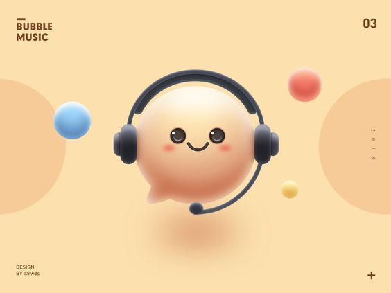

Diet Chart
Recommended diet as prescribed by your doctor.

Medication Chart
Your prescribed medications by your doctor.

Chatbot
Talk to our AI-powered recovery coach anytime.
Support Circle
Your doctor, emergency contacts, and insurance in one place.